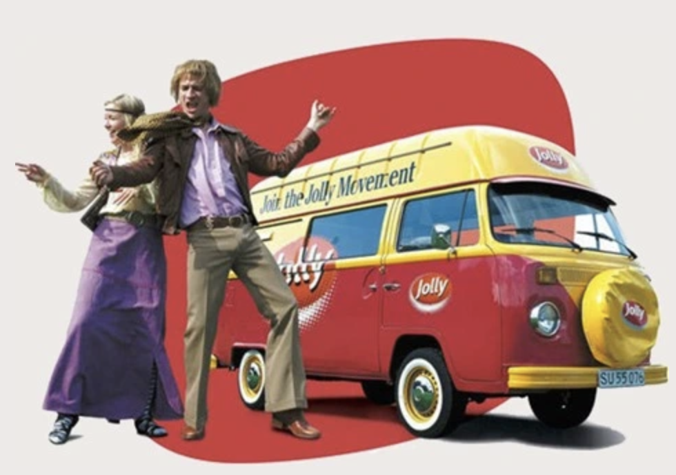

Sig Jolly til din cola!
Jolly Cola er en original dansk sodavand, der går tilbage til 1959. I dag produceres Jolly Cola af det danske bryggeri ’Vestfyen’. Jolly Cola havde frem til 1980'erne en markedsandel på omkring 40% af det danske colamarked. Det var ekstraordinært, da Danmark er det eneste land i verden, hvor en anden cola end den originale Coca Cola har haft en større markedsandel.
Nu lanceres den høje danske kvalitet af Jolly Cola i et nyt design med forbedret smag…